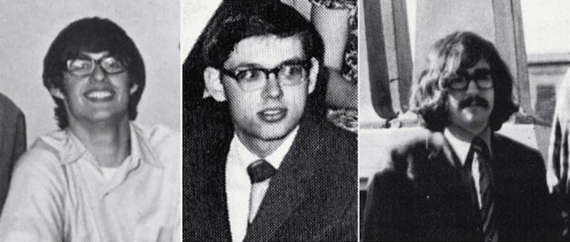
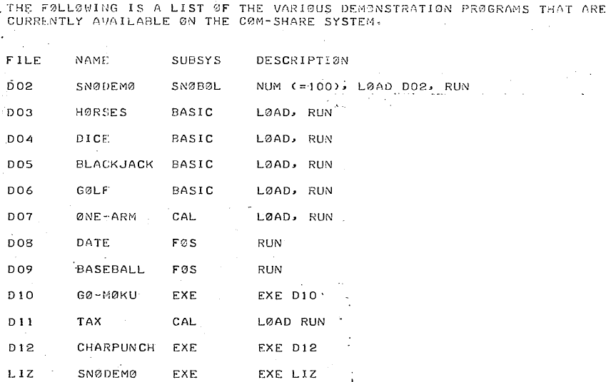
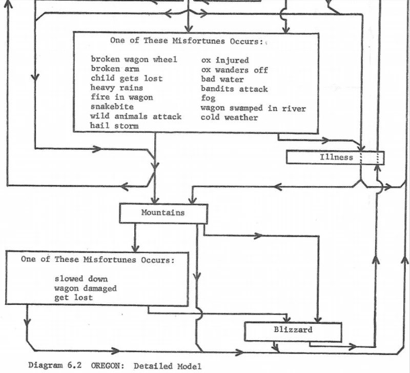
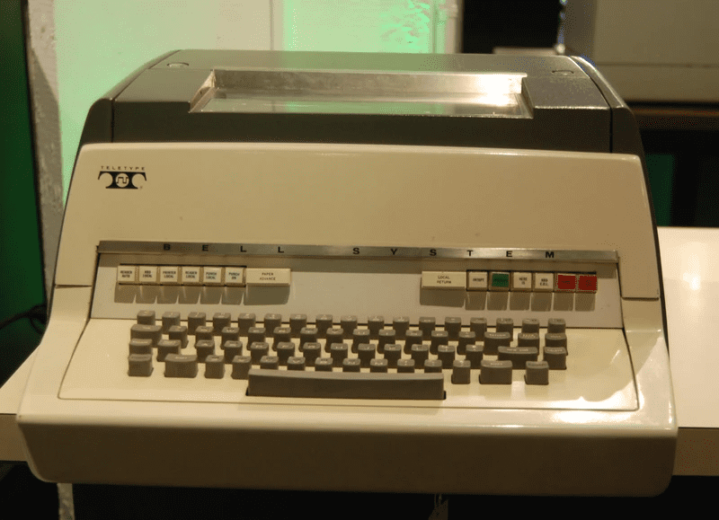
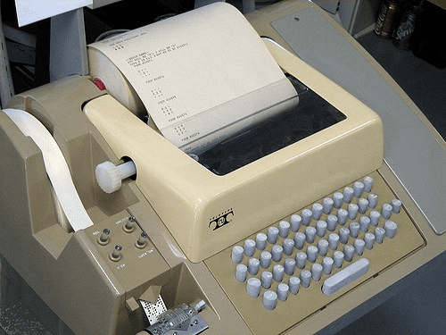
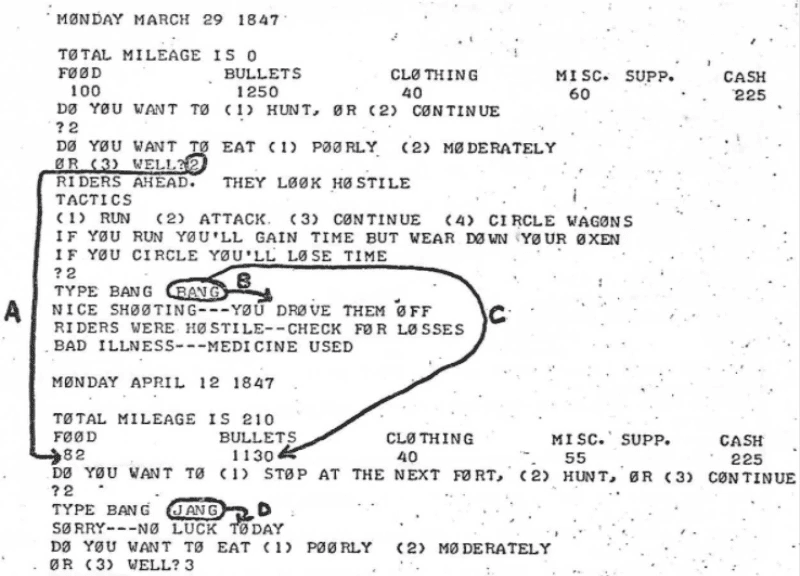

The Early Trail of Gaming
The game I'll focus on for this article is one of the most well-known games within an educational context. Much like the lunar landers I talk about in another article, The Oregon Trail evolved through a series of variants that threaded their way through the early evolution of gaming, showing yet another way programmers could combine ludic and narrative aspects.
The Context
The Elementary and Secondary Education Act of April 1965 authorized the establishment of regional facilities to address educational problems and issues. The act didn't define specific regions; thus, the individual states had to define regions and instigate planning and development.
Also, in 1965, the University of Minnesota College of Education formed the Central Minnesota Educational Research and Development Council (cmERDC). The focus was to provide technology support and volume purchasing services to eighty Central Minnesota school districts.
In 1966, the cmERDC formed a larger computing consortium, much like the BOCES system in New York that I talked about in the context of The Sumerian Game. The cmERDC proposed that Minneapolis-St. Paul school districts join forces to purchase a time-sharing mainframe and introduce terminals at schools throughout the Twin Cities.
For non-American readers, the term "Twin Cities" (capitalized) in the context of the United States usually refers to Minneapolis and St. Paul in Minnesota. Both cities are close, separated by the Mississippi River. The distance between them is roughly ten miles (sixteen kilometers).
In 1967, this initiative led to the creation of the Minnesota School Districts Data Processing Joint Board, soon renamed Total Information for Educational Systems (TIES), encompassing eighteen area school districts.
The objectives of TIES were to develop a cooperative educational data processing system for the Twin Cities metropolitan area, establish a data processing staff devoted to the needs of elementary and secondary education, and expand the use of the computer as an educational tool. Along with this, TIES had goals of making new resources and instructional techniques available to school personnel, providing better dissemination of information among schools, and developing a means of exchanging student information.
The People's Computer Company newsletter published an article about TIES in its February 1973 issue.
One of the many Minneapolis schools with a TIES terminal in the early 1970s was Bryant Junior High School in south Minneapolis. In 1971, two Carleton College math majors, Paul Dillenberger and Bill Heinemann, were teaching students at Bryant while rooming with a third Carleton student named Don Rawitsch. Rawitsch, a senior at Carleton College, was a student teacher in American history at Jordan Junior High School in north Minneapolis.

The above photos are from the Carleton College Yearbook from 1972. From left to right are Don Rawitsch, Bill Heinemann, and Paul Dillenberger.
The Start of the Trail
In various interviews, the three men involved have repeated the same general narrative: Dillenberger and Heinemann returned home one night to discover their roommate plotting an elaborate board game on the floor of their living room. Rawitsch was due to teach a unit on Western expansion in a little over a week, and he felt the students might find the subject more engaging if he created a board game depicting travel along the famed Oregon Trail.
What Rawitsch had up to that point was a board game tracing a path from Independence, Missouri, to the Willamette Valley in Oregon. The narrative context was that students would pretend to be pioneer families. Each student would start with a certain amount of money. They could buy oxen, clothes, and food with that starting capital. That was the establishing part of the game.
Students would then advance with the roll of a die and the drawing of random event cards. Those event cards meant that, along the way, the students would encounter various situations, usually misfortune: broken limbs, thieves, and disease. In roughly twelve turns, the students would simulate the two-thousand-mile journey thousands of real pioneers made to the West Coast in the nineteenth century.
As part of cmERDC, the Minneapolis school district, where all three taught, had recently purchased a mainframe computer, and each school had a teletype terminal for remote access to the computer. Heinemann had taken the only computer course offered by Carleton, and he had been pondering creating a program allowing a user to interact with a computer through natural language. Still, he had yet to land on a concept he could implement. When Heinemann saw Rawitsch trying to draw a map of the American West on a four-foot sheet of butcher paper, he suggested to his two roommates that they create the game on a computer instead.
The two of them brought the computer aspect into it. My role was to bring the history into it and suggest the various things that could happen to settlers traveling the trail. Don Rawitsch
I was fascinated by the power of the computer to not only calculate, but also to interact with written language. I had been thinking about writing a program to interact with a human through language, but the content of such a program remained a mystery to me. Bill Heinemann
This statement makes you wonder if Heinemann had been aware at all of ELIZA. Nothing Heinemann has said in any interviews indicates that he was. The idea of "interact with a human through language" is interesting and was something that ELIZA had been doing. Within the context of the broader "computing in education" movement, it's not easy to find a lot of references to ELIZA. The October 1970 issue of the People's Computer newsletter mentions "Liz," an ELIZA-like program.

The article context specifically says that "LIZ is the famous ELIZA program developed at MIT that tries to give the impression that there is a psychiatrist at the other end of the line."
I call this out here only because it's interesting how little impact ELIZA seems to have had on various early programmers in the People's Computing context. This lack of influence is even more interesting, considering that human-level interaction via English-style commands became a defining element of text adventures. As we'll see, one aspect of this makes its way into The Oregon Trail.
Rawitsch had already spent about a week designing the board game, and it's worth keeping in mind that he had planned to chart player movement across the map through dice rolls while having the students draw random event cards to simulate the hardships encountered on the trail. How would that translate to the computer?
As part of the computerized version, the trio translated movement into a fixed amount of progress each turn based on a speed chosen by the player. They also added the idea of consuming resources, such as food and medicine, to the implementation. In place of random event cards, they created a flow chart of misfortunes that could occur and tied them into the terrain that the player was traversing.
Don had ideas on how the board game would work, but when Paul and I decided to computerize it, there were some things that we changed. One of the goals I had was to make the randomness tied to the geography. You were most likely to be attacked in the western plains. Cold weather was more likely to be encountered in the mountains in Wyoming and Oregon. I put all the random events into a table of probabilities so it would be easy to add new events or adjust the probability of things happening. Bill Heinemann
The general gameplay loop was that as players faced obstacles along the way, the supply numbers would decrease as the mileage number increased. Thus, the student's goal would be to get the total miles traversed up to the significant threshold of 2,040 miles — the distance of the historic route from Independence, Missouri, to Oregon City, Oregon — before their supplies ran out.

The above is a schematic of how events would occur to the player as part of their progression. When examining the design from this perspective, we can see that the game resembles The Sumerian Game in terms of resource management. Rawitsch, Heinemann, and Dillenberger conceived the emerging game as a simulation wrapped around a narrative.
The Gaming Experience
What came to be "The Oregon Trail" was first played by Rawitsch's students on 3 December 1971. The game proved a hit with Rawitsch's Jordan High School class. It was likewise a hit with students at Bryant Junior High, where Heinemann also introduced the game.
It is essential to keep in mind the context of play. At the time, computers were new to education; there were generally no monitors, and students played the first version of the game on a teletypewriter, essentially, an electromechanical typewriter that could communicate via phone line with a large, mainframe computer.


Thus, the game was text-based and paper-based; a student would type out their commands on a roll of paper, and the computer would respond by typing back status updates.

The above is an example of what a playthrough would look like. The annotated bits there are to show how the responses by the students would directly impact what the game printed out. And that is how all this would have played out from a student's perspective. Most students at the time would connect to a distant system via timeshare, typing command-line instructions on a machine that looked very much like a typewriter, as you can see above. Except that here, the "typewriter" would type back to you, printing the output from a distant computer at a sedate ten characters per second.
Thus, Don Rawitsch would have had to wheel in a relatively bulky teletypewriter, plug in the power and phone cables, dial a number on a rotary pad that would connect the machine to a much more expensive HP 2100 minicomputer that wasn't even in the same building. And keep in mind that there was also only that single teletype terminal. So Rawitsch had to cycle the students through in groups, with a single student at the keyboard while others clustered around waiting their turn.
The Narrative Context
Like High Noon and ROCKET, it was the case that The Oregon Trail provided a narrative. You take on a very defined role even more than in the former games, and very much like in The Sumerian Game. The start of the play sets up your context:
THIS PROGRAM SIMULATES A TRIP OVER THE OREGON TRAIL FROM INDEPENDENCE, MISSOURI TO OREGON CITY, OREGON IN 1847.
Players are put into a game world as a relatively distinct, if anonymous, protagonist:
YOUR FAMILY OF FIVE WILL COVER THE 2000 MILE OREGON TRAIL IN 5-6 MONTHS --- IF YOU MAKE IT ALIVE.
And there is a definitive ending, assuming all goes well:
YOU FINALLY ARRIVED AT OREGON CITY AFTER 2040 LONG MILES---HOORAY!!!!! PRESIDENT JAMES K. POLK SENDS YOU HIS HEARTIEST CONGRATULATIONS AND WISHES YOU A PROSPEROUS LIFE AHEAD AT YOUR NEW HOME
That's a successful ending. The game, even upon failure, had an interesting approach to situating you in that fatal history:
DO TO YOUR UNFORTUNATE SITUATION, THERE ARE A FEW FORMALITIES WE MUST GO THROUGH WOULD YOU LIKE A MINISTER? WOULD YOU LIKE A FANCY FUNERAL? WOULD YOU LIKE US TO INFORM YOUR NEXT OF KIN? YOUR AUNT NELLIE IN ST. LOUIS IS ANXIOUS TO HEAR
Yes, the grammatical error of “DO” instead of “DUE” is in the original! From a narrative standpoint, this is a little bit silly since, by this point, the player is dead, so being able to answer questions would be problematic. But it was a nice touch beyond just getting a simple “Game Over” message, and the player could imagine that these were the wishes they had made known should misfortune befall them.
Yet even with the above narrative trappings, The Oregon Trail, much like those earlier simulations, is one of resource management and nothing more. You managed food resources in The Sumerian Game. You managed fuel resources in ROCKET. You could even argue in High Noon that you managed bullet resources.
The Ludic Context
Embarking on the virtual journey of The Oregon Trail, players navigate through eighteen turns, symbolizing two-week intervals on the challenging trail. At the onset of each turn, a pivotal decision arises: to engage in hunting or to persist in the arduous journey, transforming the gameplay into a strategic choice-of-action experience. The game meticulously monitors students' advancement, gauged by the miles covered. Consequently, the ludic narrative unfolds in a cyclical rhythm, with each cycle mirroring two weeks of enthralling travel along the historic trail.
The game introduces a delicate balance: dwindling supplies coincide with escalating mileage. The mission is clear — traverse slightly over two thousand miles before exhausting resources. Here's the exciting part: a triumphant journey demands around twelve such cycles, aligning with the eighteen turns. Each cycle, representing two weeks, contributes to the overall progression, making the connection between turns and cycles integral to the game's dynamic nature. This count, however, fluctuates based on diverse circumstances influencing the travel pace.
Each turn corresponds to a two-week interval on the trail. Therefore, if you multiply the number of turns (eighteen) by the duration each turn represents (two weeks), you get 36 weeks. Considering each cycle represents two weeks of travel, the "twelve cycles" mentioned correspond to six cycles within each turn. Therefore, the twelve cycles encompass the entire journey through the eighteen turns, each containing six cycles of two weeks each.
The Oregon Trail is a bit unique because it can succeed as a narrative experience in that its procedural level reflects the experience of a settler on the trail. You're worrying about where you'll find enough food to eat, whether the weather will hold out long enough, and so on. This realism is as opposed to solving arbitrary puzzles that have little to do with the apparent story. It's even possible to be dealt a hopeless hand in the form of a series of massive disasters you couldn't possibly have planned for — again, just like an actual settler.
Ludic Strategy
From a purely ludic experience perspective, what's also nice is that there can be a more-or-less workable strategy. In fact, this strategy can differ depending on what version of the game you are playing.